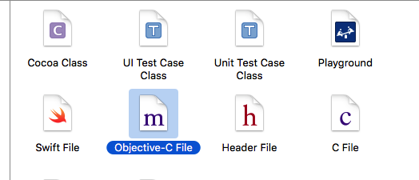
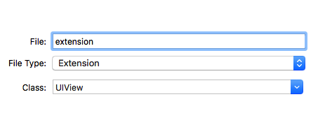
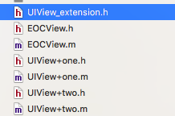
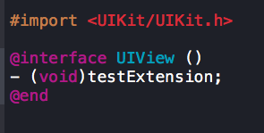
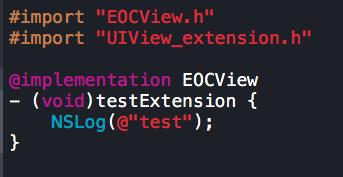

分类
1、 什么是extension
extension被开发者称之为扩展、延展、匿名分类。extension看起来很像一个匿名的category，但是extension和category几乎完全是两个东西。和category不同的是extension不但可以声明方法，还可以声明属性、成员变量。extension一般用于声明私有方法，私有属性，私有成员变量。
2、 extension的存在形式
category是拥有.h文件和.m文件的东西。但是extension不然。extension只存在于一个.h文件中，或者extension只能寄生于一个类的.m文件中。比如，viewController.m文件中通常寄生这么个东西，其实这就是一个extension：
@interface ViewController ()
@end
当然我们也可以创建一个单独的extension文件，如下图：



UIView_extension.h中声明方法：

导入UIView_extension.h文件进行使用：

注意：extension常用的形式并不是以一个单独的.h文件存在，而是寄生在类的.m文件中。
3、category和extension的区别
就category和extension的区别来看，我们可以推导出一个明显的事实，extension可以添加实例变量，而category是无法添加实例变量的（因为在运行期，对象的内存布局已经确定，如果添加实例变量就会破坏类的内部布局，这对编译型语言来说是灾难性的）。
extension在编译期决议，它就是类的一部分，但是category则完全不一样，它是在运行期决议的。extension在编译期和头文件里的@interface以及实现文件里的@implement一起形成一个完整的类，它、extension伴随类的产生而产生，亦随之一起消亡。
extension一般用来隐藏类的私有信息，你必须有一个类的源码才能为一个类添加extension，所以你无法为系统的类比如NSString添加extension，除非创建子类再添加extension。而category不需要有类的源码，我们可以给系统提供的类添加category。
extension可以添加实例变量，而category不可以。
extension和category都可以添加属性，但是category的属性不能生成成员变量和getter、setter方法的实现。